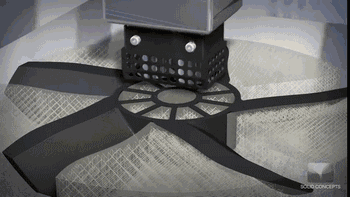

Procesos de Manufactura
Departamento de Diseño y Manufactura
La Fabricación Aditiva o impresión 3D es posiblemente el componente más conocido de la llamada Industria 4.0, la nueva revolución industrial, y sin embargo no todos conocen en qué consiste y el porqué de este nuevo tipo de fabricación.
La manufactura aditiva (AM) es un conjunto de procesos que crean piezas mediante la adición controlada de material capa sobre capa. Ha transformado sectores como aeroespacial, médico, automotriz y manufactura de prototipos.
Llamamos fabricación conformativa (o formativa, según otros autores) a aquella en la que un material es obligado (por presión, a golpes, derritiéndolo o por cualquier otro procedimiento) a adquirir la forma y dimensiones que nos interese. La fabricación sustractiva sería aquella en la que se van eliminando trozos de material (a golpes, lijado, fresado u otro procedimiento) de un bloque compacto inicial hasta conseguir el producto deseado.
La moderna impresión 3D consiste precisamente en eso: en ir añadiendo elementos de material de forma muy precisa, asegurando la correcta unión entre los distintos elementos añadidos (por ejemplo, haciendo que el material esté a una temperatura tal que una adecuada fusión entre capas es posible); y todo ello de forma automática, controlada por un ordenador y a partir de un diseño preliminar en 3D. Como analogía, vamos a revisar cómo obtenemos una imagen impresa en un papel mediante una impresora de inyección de tinta. Partimos de una imagen digital que, como sabrá, está compuesta de múltiples puntos, llamados pixels. Es la unión de millones de pequeños pixels, imperceptibles uno a uno a simple vista, lo que construye la imagen final. Estamos tan acostumbrados al mundo de la imagen digital que parece que ya no recordamos que hace nada las imágenes no se hacían así.
Bajo la denominación de Fabricación Aditiva se agrupan ya decenas de nuevas tecnologías de fabricación. Sin embargo, sin entrar en demasiados detalles técnicos, es posible explicar de una forma general en qué consisten todas ellas.
Como veremos más adelante, existen actualmente una multitud de tecnologías de fabricación aditiva, si bien es posible establecer un proceso genérico común a todas ellas, que consta de las siguientes fases:
El primer paso común a un proceso de fabricación aditiva es generar un modelo de ordenador en 3D del producto que queremos obtener. Existen actualmente múltiples sistemas de diseño de piezas en 3D, si bien de forma general podemos considerar 3 tipos:Herramientas de CAD / Modelado de Sólidos, Herramientas de Escultura 3D y Modelado de superficie / malla 3D.
La manufactura aditiva (AM) comprende un conjunto de procesos de fabricación donde las piezas se crean mediante la adición de material capa por capa. Según la norma ASTM F2792, los procesos se clasifican en siete categorías:
| Proceso | Descripción |
|---|---|
| Fusión en cama de polvo (PBF) | Uso de láser o haz de electrones para fundir polímeros o metales. |
| Extrusión de material (MEX) | Deposición controlada de filamentos, como en FDM. |
| Fotopolimerización en cuba (VPP) | Solidificación por luz ultravioleta de resinas líquidas, como SLA. |
| Inyección de aglutinante (Binder Jetting) | Deposición de un aglutinante sobre polvo metálico o cerámico. |
| Chorro de material (Material Jetting) | Gotas de fotopolímero curadas selectivamente. |
| Depósito directo de energía (DED) | Suministro simultáneo de polvo y energía para reparaciones o piezas grandes |
| Hoja por hoja (Sheet Lamination) | Unión de láminas de material para formar geometrías. |
Las tecnologías más empleadas en ingeniería mecánica incluyen:
Funde un filamento termoplástico y lo deposita capa por capa. Es el método más accesible y ampliamente usado para prototipos funcionales.
La manufactura aditiva abarca una amplia gama de materiales según el proceso:
| Tipo de material | Ejemplos |
|---|---|
| Polímeros | PLA, ABS, PETG, nylon, TPU. |
| Metales | Acero inoxidable, titanio, inconel, aluminio. |
| Cerámicos | Zirconia, alúmina. |
| compuestos | Filamentos reforzados con fibra de carbono o vidrio. |
Como veremos más adelante, existen actualmente una multitud de tecnologías de fabricación aditiva, si bien es posible establecer un proceso genérico común a todas ellas, que consta de 6 fases:
Puede que a largo plazo así ocurra, pero por el momento las cosas no son tan ideales como aparentan...
| Ventajas | Limitaciones |
|---|---|
| Geometrías complejas sin costo adicional | Velocidad de fabricación relativamente baja |
| Personalización total | Limitación en materiales disponibles |
| Reducción de desperdicio | Acabados superficiales requieren post-proceso |
| Prototipado rápido | Costos altos en impresoras industriales |
Aunque es imposible echar un vistazo a todos los sectores en los que la impresión 3D está ya pegando con fuerza, repasaremos algunas de las aplicaciones más importantes.
La impresión 3D en la industria aeroespacial se utiliza en diversas aplicaciones, desde la creación de prototipos hasta la fabricación de componentes complejos y ligeros.
Arrastra los pasos al orden correcto: